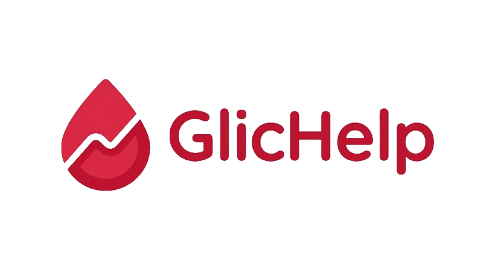
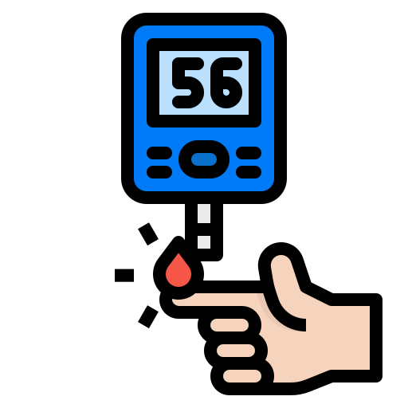
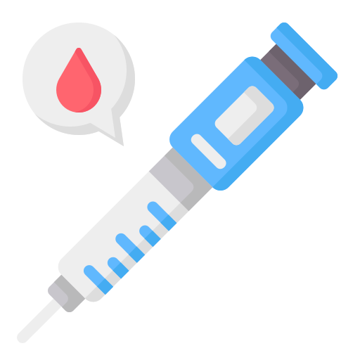
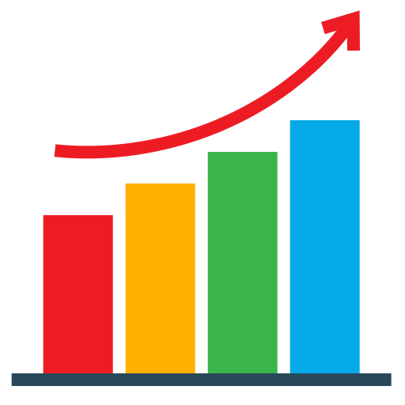
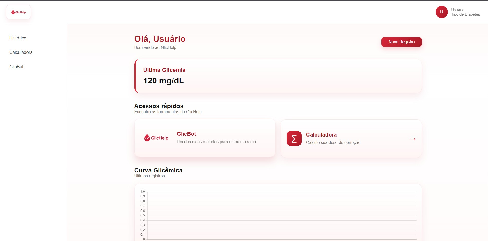

Tecnologia no cuidado com o diabetes.
Uma solução desenvolvida para auxiliar no acompanhamento e organização de informações relacionadas ao diabetes.
Por que o Glichelp?
Muitos dados.
Pouca organização.

Glicemia
Registro e acompanhamento das medições.
Alimentação
Informações relacionadas às refeições.

Insulina
Organização dos registros de aplicação.

Histórico
Visualização dos dados registrados.
Conheça o Glichelp
Uma plataforma desenvolvida para centralizar informações e facilitar o acompanhamento dos registros.


Conheça o Tiabete
Um assistente virtual integrado ao Glichelp para auxiliar na interpretação e acompanhamento das informações registradas.
Por trás do Glichelp
Tecnologias utilizadas no desenvolvimento do projeto.
DE DADOS
IA